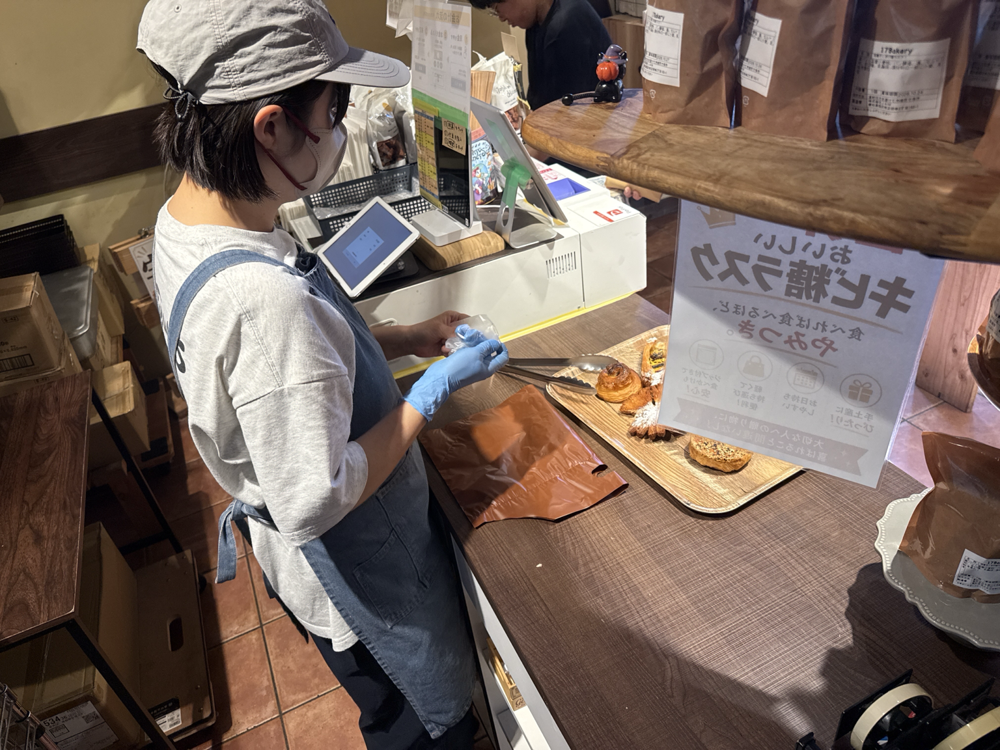
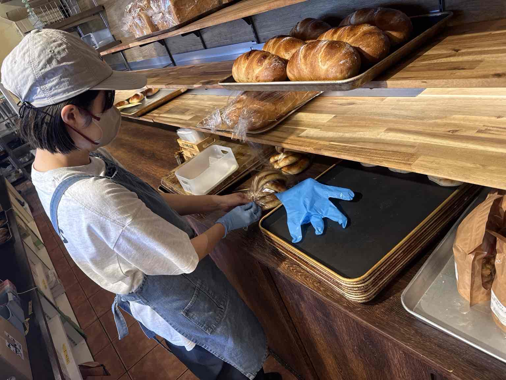
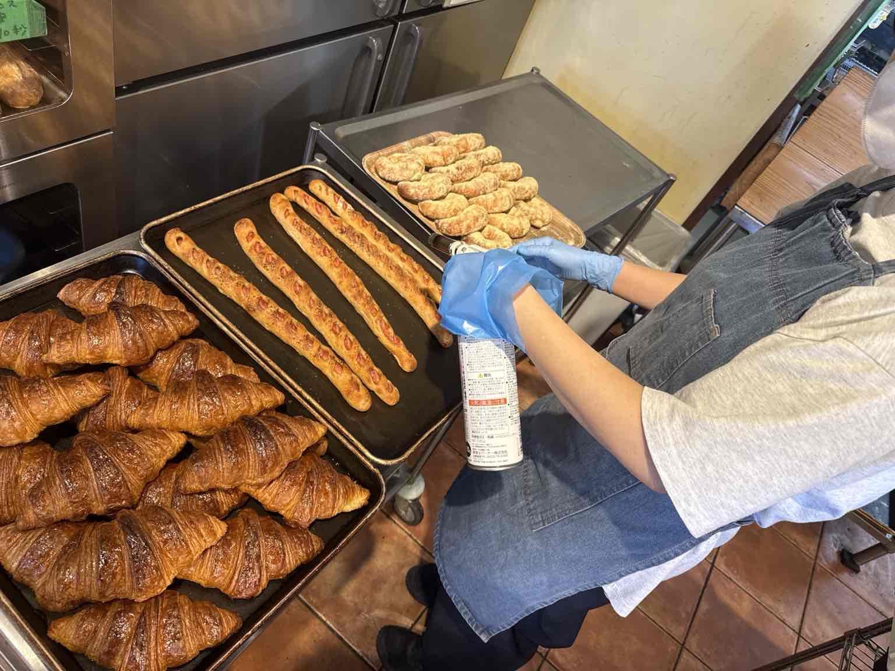
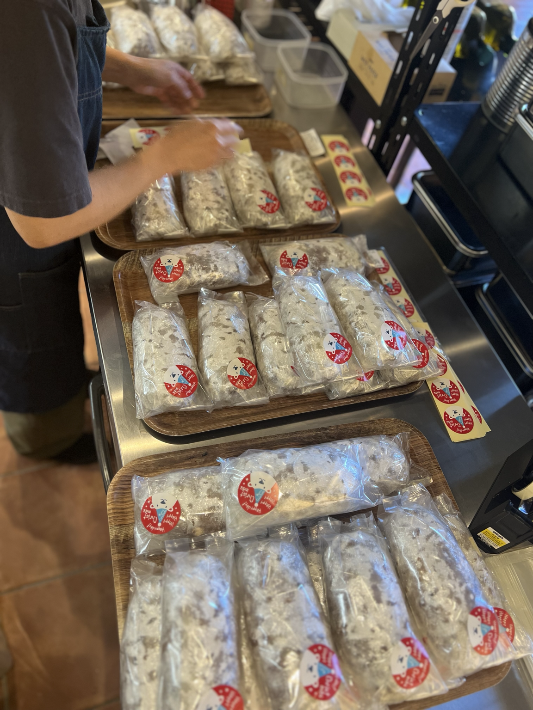
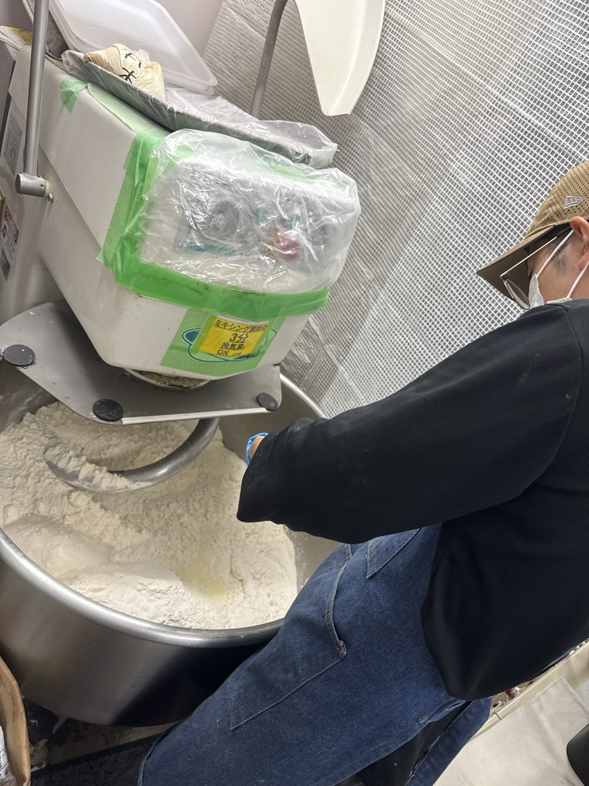
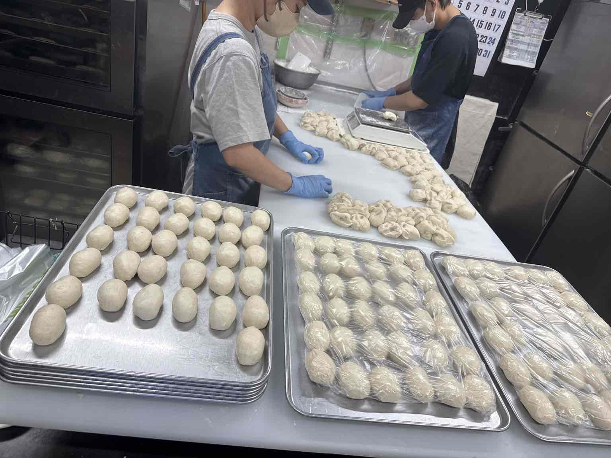
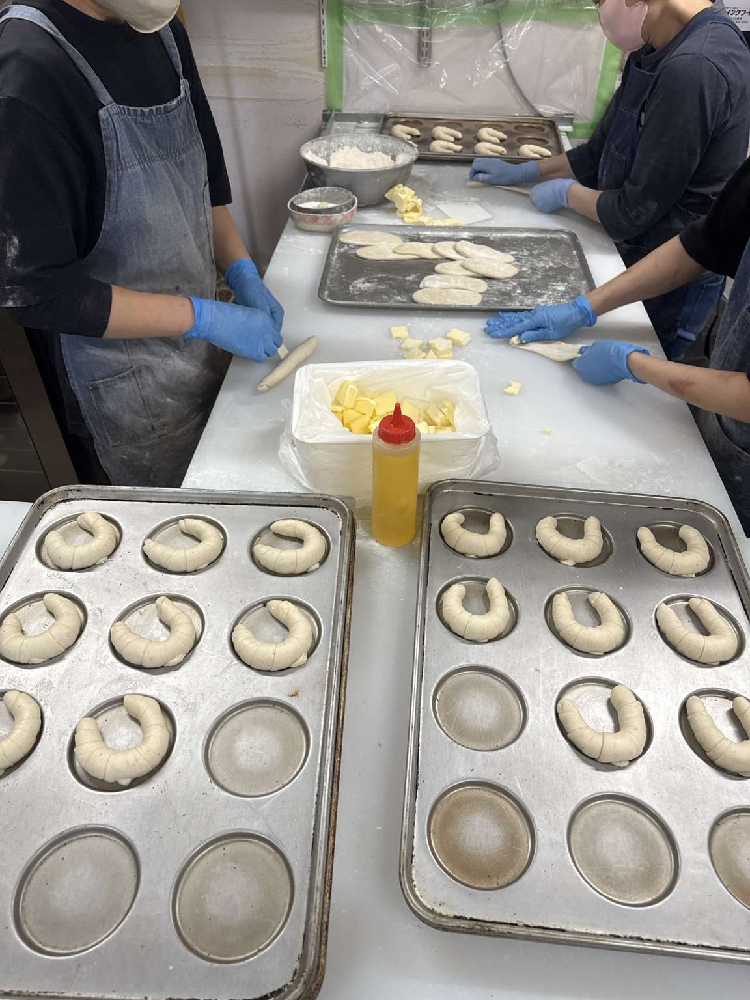
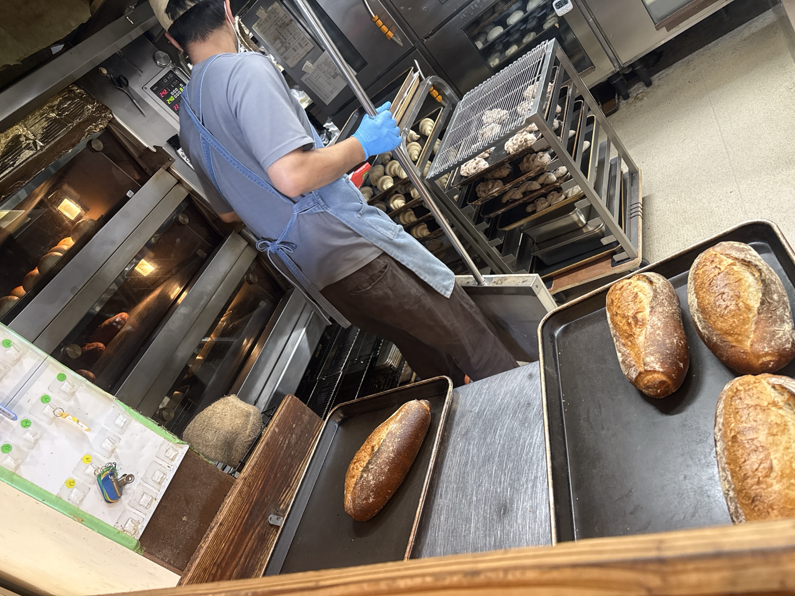
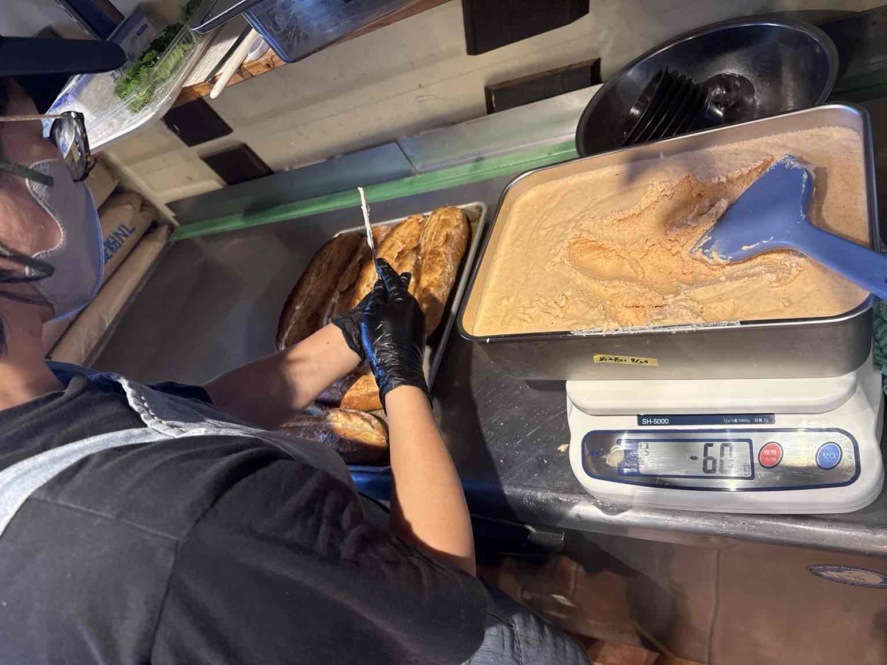
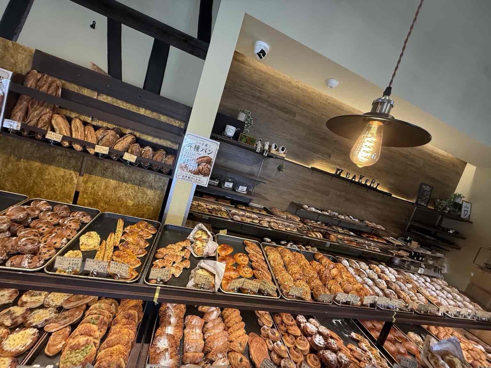

パン製造スタッフ
仕込み・分割・成形・焼成・仕上げなど、 パン製造に関わる仕事です。
大型ミキサーを使った生地づくりから、 分割、成形、焼成、仕上げまで、 さまざまな工程を経験できます。
現在、製造部門は正社員のみ募集しています。
一人ひとりの仕事がつながって、
17Bakeryの一日ができています。
17Bakeryは、
愛知県稲沢市にあるベーカリーです。
パンをつくる人。
売り場をつくる人。
お客様を迎える人。
それぞれの仕事がつながることで、
17Bakeryというお店ができています。
私たちが採用で大切にしているのは、
経験だけではありません。
時間や約束を守る。
教わったことを一つずつ覚える。
分からないことは確認する。
周りを見ながら協力する。
忙しいときほど声を掛け合う。
最初から何でもできる必要はありません。
できなかったことが、
少しずつできるようになる。
そんな成長を楽しめる方と、
一緒に働きたいと思っています。
仕込み・分割・成形・焼成・仕上げなど、 パン製造に関わる仕事です。
大型ミキサーを使った生地づくりから、 分割、成形、焼成、仕上げまで、 さまざまな工程を経験できます。
現在、製造部門は正社員のみ募集しています。
現在、土日に勤務できる方を募集しています。
時給 1,500円
※研修期間中は時給1,200円
レジ・袋詰め・商品のお渡し・品出し・ 売り場整理・洗い物・片付け・清掃などを担当します。
最初は基本となるレジ業務から覚えていきます。
慣れてきたら、
品出し・洗い物
など、
少しずつできる仕事を増やしていきます。
基本的には、
レジ・品出し・洗い物の3ポジションを
1時間ごとにローテーション。
一日中ずっと同じ作業をするのではなく、
時間ごとに仕事内容が変わります。



丁寧さと正確さを大切にしながら、 お客様をお迎えします。
焼き上がったパンを補充し、 たくさんのパンが並ぶ売り場をつくります。
次の仕事がスムーズに進むよう、 チーム全体を支える仕事です。

製造スタッフは、
生地の仕込みから焼き上げ・仕上げまで、
パンづくりのさまざまな工程を担当します。
一つの工程だけではなく、
少しずつ仕事の幅を広げていきます。

材料を計量し、 ミキサーを使ってパン生地を仕込みます。

仕込んだ生地を、 商品ごとに決められた重量へ分割していきます。

パンの種類に合わせて、 一つずつ形をつくっていきます。

オーブンを使い、 パンを焼き上げていきます。

焼き上がったパンを、 商品ごとに仕上げて完成させます。
もともと17Bakeryのパンが好きで、
パンがおいしく種類も多く、
活気があって賑やかなお店という印象がありました。
店内にはいつも焼きたてのパンのいい香りがしていて、
スタッフのみんなが明るく生き生きと働いている姿も印象的でした。
「私もこのチームの一員として働きたい」
と思ったのがきっかけです。
正直、かなり忙しいです（笑）。
特に土日はたくさんのお客様に
ご来店いただきます。
ただ、
「まだこれしか時間が経っていないの？」
ではなく、
「もうこんな時間？」
というくらい、
一日があっという間に過ぎていきます。
スタッフ同士で声を掛け合って、
忙しい時間をみんなで乗り切ったときには達成感があります。
土日は特にお客様が多いため、
スピードだけではなく、
丁寧な接客と正確なレジ操作の両方が必要です。
最初は緊張もありますが、
仕事に慣れてくると
少しずつ周りを見る余裕も生まれてきます。
たくさんのお客様にパンを選んでいただき、
「ありがとう」と言っていただけることが、
この仕事のやりがいです。
今回の募集は、
土日に勤務できる方
を対象としています。
ただし、
「勤務希望を出した日＝必ず勤務できる」
という募集ではありません。
現在働いているスタッフの勤務状況を踏まえながら、
店舗が必要としている曜日・時間帯と、
皆さんの勤務可能日時を合わせて
シフトを決定します。
一方、
「8:00〜10:00のみ」
「月1〜2日のみ」
など勤務可能日時がかなり限定される場合は、
希望を出していただいても
勤務できないことがあります。
1日の勤務希望は1時間〜最大6時間。
3時間程度の勤務も可能です。 まずは勤務できる曜日・時間帯をご相談ください。
17Bakeryで働いているスタッフのほとんどが、
未経験からスタートしています。
入ってすぐに一人でポジションを
任せることはありません。
仕事に慣れるまでは先輩スタッフがつき、
マンツーマンで一つずつ教えていきます。
売り場スタッフの研修期間は、 150時間を目安 としています。
研修期間中は 時給1,200円 です。
ただし、 150時間働けば自動的に研修終了、 という制度ではありません。
レジ・品出し・洗い物を、 現在働いているスタッフと遜色のない 速度・正確さ・丁寧さ で担当できることを基準に判断します。
仕事を早く覚えて基準を満たした場合には、 150時間より早く研修期間を終了し、 通常時給へ変更する場合もあります。
もちろん大丈夫です。 17Bakeryで働いているスタッフのほとんどが 未経験からスタートしています。 慣れるまでは先輩スタッフがついて マンツーマンで教えます。
必ず毎週両方に出勤する必要はありません。 ただし今回の募集は、 土日に勤務できる方が対象です。 勤務希望を多く出していただけるほど シフトを調整しやすくなります。 勤務可能日が少ない場合は、 シフトに入れないことがあります。
はい。 1日1時間〜最大6時間まで 勤務希望を出していただけます。 3時間程度の勤務も可能です。
はい。 売り場スタッフは150時間を 研修期間の目安としています。 ただし、 仕事の習熟状況によっては 150時間より早く研修を終了する場合があります。
食品を扱う仕事のため、 衛生面・異物混入防止・パンの香りを 大切にしています。
エプロン
お店からデニムエプロンを支給します。
帽子
各自でご用意ください。
長い髪はまとめて、
商品や作業に触れないようにしてください。
髪色
基本的に自由です。
清潔感のある身だしなみをお願いします。
ネイル
製造スタッフは禁止です。
売り場スタッフについては、
ナチュラルなものであれば
事前相談のうえ可能です。
ピアス・アクセサリー
異物混入防止のため、
勤務中は外していただきます。
香水
香水など香りの強いものはご遠慮ください。
17Bakeryでは焼きたてのパンの香りも
お店の大切な要素だと考えています。
17Bakeryの商品を
20％OFF
で購入できます。
1回の購入につき割引対象は2,000円分まで、
最大400円の割引
となります。

仕事内容も。
楽しさも。
忙しさも。
そのうえで、 「17Bakeryで働いてみたい。」 と思っていただけたら、 ぜひご応募ください。
応募フォームへ